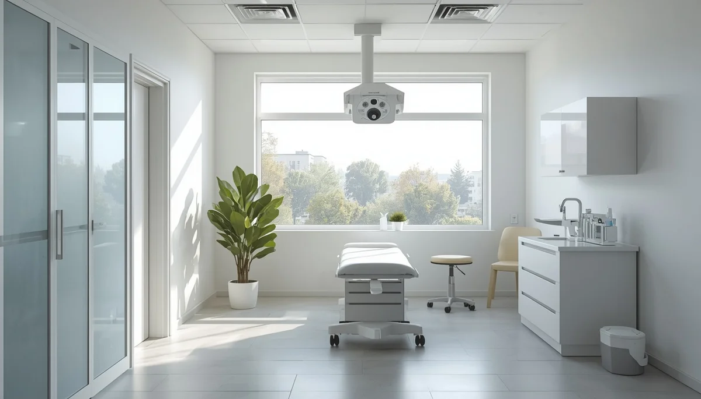

Controles periódicos y maduración ósea
Dado que la escoliosis evoluciona estrechamente ligada a las fases de crecimiento físico, mantener un programa de revisiones periódicas con el especialista resulta indispensable. Estas citas permiten monitorizar la estabilidad de la curva hasta que se completa la maduración ósea esquelética.
El fin del crecimiento y la estabilización
Una vez que el adolescente alcanza su madurez ósea definitiva, el riesgo de progresión significativa de la curva se reduce drásticamente. Cumplir con el calendario de revisiones médicas pautado aporta la seguridad de que cualquier cambio repentino será detectado y atendido de inmediato.
Acompañar la salud espinal a largo plazo
Mantener una comunicación fluida con el equipo clínico asegura un tránsito tranquilo y supervisado hacia la etapa adulta, consolidando hábitos posturales saludables para toda la vida.
"Los controles periódicos y la supervisión de la maduración ósea garantizan un cuidado médico riguroso hasta la estabilidad definitiva."
Asegurar el bienestar clínico con constancia
El seguimiento médico continuado es la garantía última para preservar la salud de la columna y afrontar el crecimiento con total confianza.
➔ Volver al índice de Escoliosis Idiopática